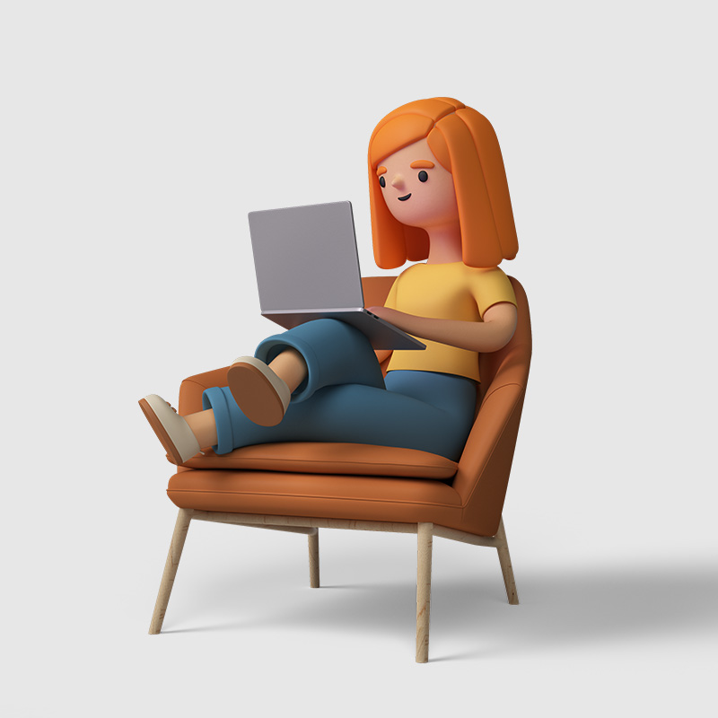
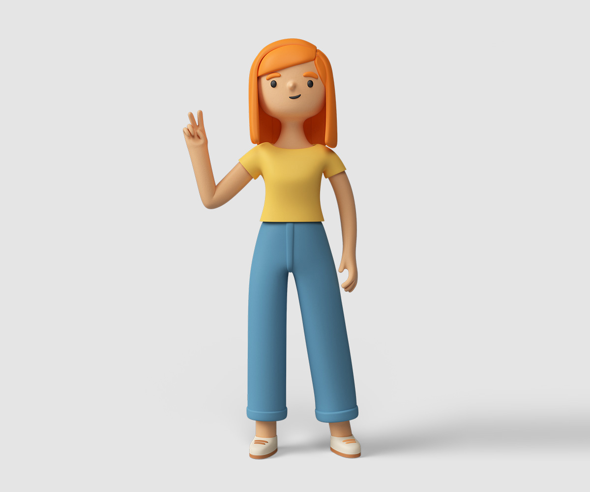
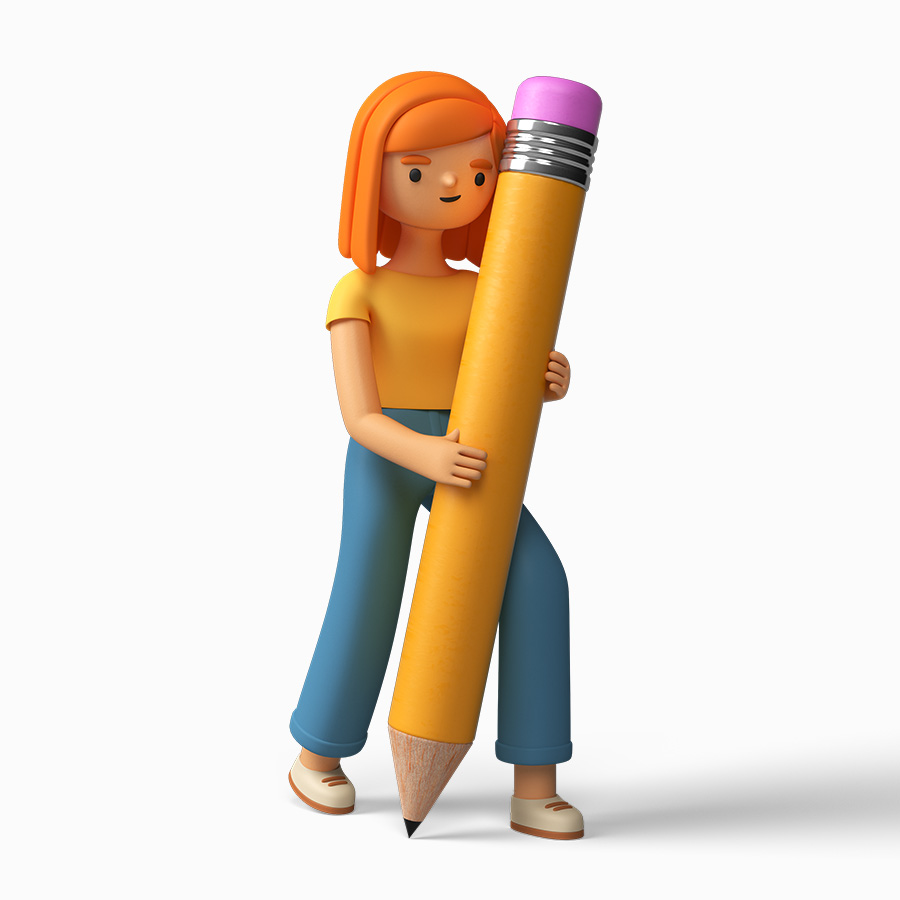

Платформа "Курс" — онлайн-занятия с опытными преподавателями в небольших группах для школьников всех возрастов.
Педагоги смогут найти общий язык с ребёнком и заинтересовать английским
Получить первоеСтоимость одного занятия всего — 499 руб!

Не надо никуда ходить и тратить время на дорогу
Получить первое занятие
~ 5 человек в группе, то количество,
которое помогает
преподавателю
одновременно уделять достаточно внимания каждому ученику и заинтересовать
школьников совместной работой

Ничего не нужно скачивать, просто присылаем Вам ссылку на подключение к занятию, учиться можно как с компьютера, так и с телефона
ПОЛУЧИТЬ ПЕРВОЕ